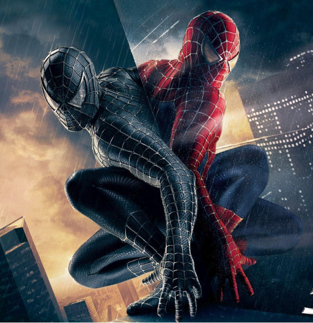

Spider-Man is a superhero appearing in American comic books published by Marvel Comics. Created by writer-editor Stan Lee and artist Steve Ditko, he first appeared in the anthology comic book Amazing Fantasy #15 (August 1962) in the Silver Age of Comic Books. He has since been featured in films, television shows, video games, and plays. Spider-Man is the alias of Peter Parker, an orphan raised by his Aunt May and Uncle Ben in New York City after his parents Richard and Mary Parker died in a plane crash. Lee and Ditko had the character deal with the struggles of adolescence and financial issues and gave him many supporting characters, such as Flash Thompson, J. Jonah Jameson, and Harry Osborn; romantic interests Gwen Stacy, Mary Jane Watson, and the Black Cat; and foes such as Doctor Octopus, the Green Goblin, and Venom. In his origin story, he gets spider-related abilities from a bite from a radioactive spider; these include clinging to surfaces, superhuman strength and agility, and detecting danger with his "spider-sense."
n 1962, with the success of the Fantastic Four, Marvel Comics editor and head writer Stan Lee was casting
about for a new superhero idea. He said the idea for Spider-Man arose from a surge in teenage demand for
comic books, and the desire to create a character with whom teens could identify. As with Fantastic Four,
Lee saw Spider-Man as an opportunity to "get out of his system" what he felt was missing in comic books.
In his autobiography, Lee cites the non-superhuman pulp magazine crime fighter the Spider as a great
influenceand in a multitude of print and video interviews, Lee stated he was further inspired by seeing a spider
climb up a wall—adding in his autobiography that he has told that story so often he has become unsure of
whether or not this is true.Although at the time teenage superheroes were usually given names ending
with "boy", Lee says he chose "Spider-Man" because he wanted the character to age as the series progressed,
and moreover felt the name "Spider-Boy" would have made the character sound inferior to other superheroes.
He also decided to insert a hyphen in the name, as he felt it looked too similar to Superman, another superhero
with a red and blue costume which starts with an "S" and ends with "man" .
Sally Kempton for the Village Voice opined in 1965 that "Spider-Man has a terrible identity problem, a marked inferiority complex, and a fear of women. He is anti-social, [sic] castration-ridden, racked with Oedipal guilt, and accident-prone ... [a] functioning neurotic".Agonizing over his choices, always attempting to do right, he is nonetheless viewed with suspicion by the authorities, who seem unsure as to whether he is a helpful vigilante or a clever criminal. Notes cultural historian Bradford W. Wright,
Spider-Man's plight was to be misunderstood and persecuted by the very public that he swore to protect. In the first issue of The Amazing Spider-Man, J. Jonah Jameson, publisher of the Daily Bugle, launches an editorial campaign against the "Spider-Man menace." The resulting negative publicity exacerbates popular suspicions about the mysterious Spider-Man and makes it impossible for him to earn any more money by performing. Eventually, the bad press leads the authorities to brand him an outlaw. Ironically, Peter finally lands a job as a photographer for Jameson's Daily Bugle.
The mid-1960s stories reflect the political tensions of the time. Early 1960s Marvel stories often deal with the Cold War and Communism.As Wright observes,
From his high-school beginnings to his entry into college life, Spider-Man remained the superhero most relevant to the world of young people. Fittingly, then, his comic book also contained some of the earliest references to the politics of young people. In 1968, in the wake of actual militant student demonstrations at Columbia University, Peter Parker finds himself in the midst of similar unrest at his Empire State University.... Peter has to reconcile his natural sympathy for the students with his assumed obligation to combat lawlessness as Spider-Man. As a law-upholding liberal, he finds himself caught between militant leftism and angry conservatives.
Peter Parker has superhuman spider-powers and abilities derived from mutations resulting from the bite of a radioactive spider.Since the original Lee-Ditko stories, Spider-Man has had the ability to cling to walls. This has been speculated to be based on a distance-dependent interaction between his body and surfaces, known as the van der Waals force,though in the 2002 Spider-Man film, his hands and feet are lined with tiny clinging cilia in t he manner of a real spider's feet. Spider-Man's other powers include superhuman strength, speed, agility and balance, and a precognitive sixth sense referred to as his "Spider-Sense," which alerts him to danger. Spider-Man has a healing factor that allows him to recover from injuries sustained during battle.In the aftermath of the 1989 "Acts of Vengeance" storyline, Spider-Man was said to have "superhuman recuperative abilities" that sped up his recovery from the exhaustion he suffered in defeating the Tri-Sentinel. The character was originally conceived by Stan Lee and Steve Ditko as intellectually gifted, but later writers have depicted his intellect at genius level. After years of fighting, Parker honed his skill into an equivalent of martial arts that is unique to his powers. Academically brilliant, Parker has expertise in the fields of applied science, chemistry, physics, biology, engineering, mathematics, and mechanics.
